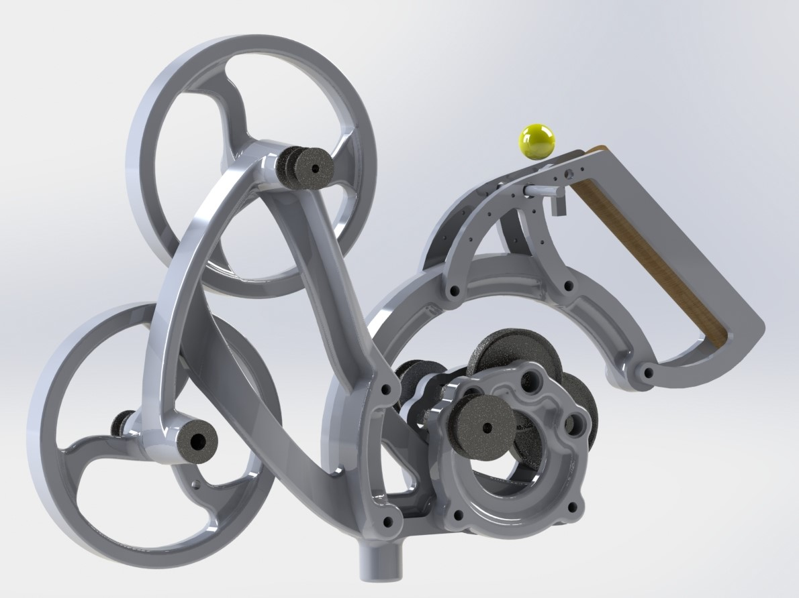
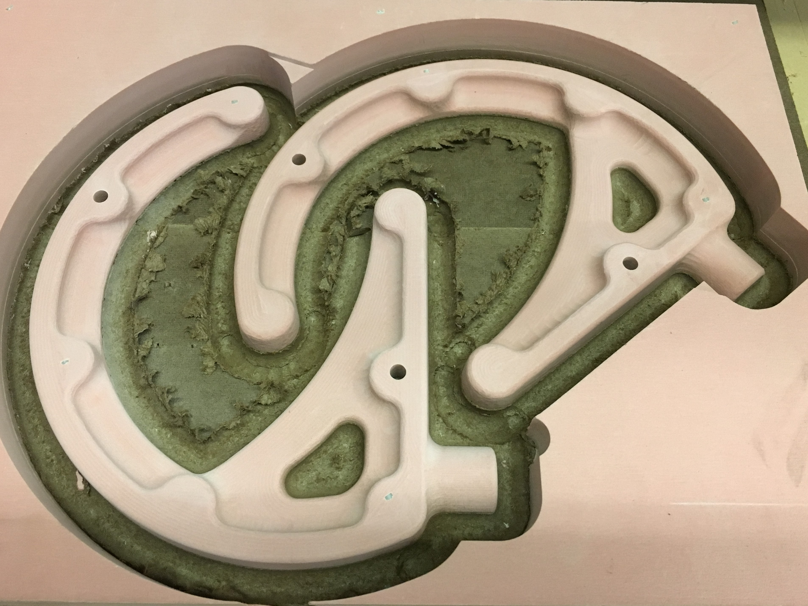
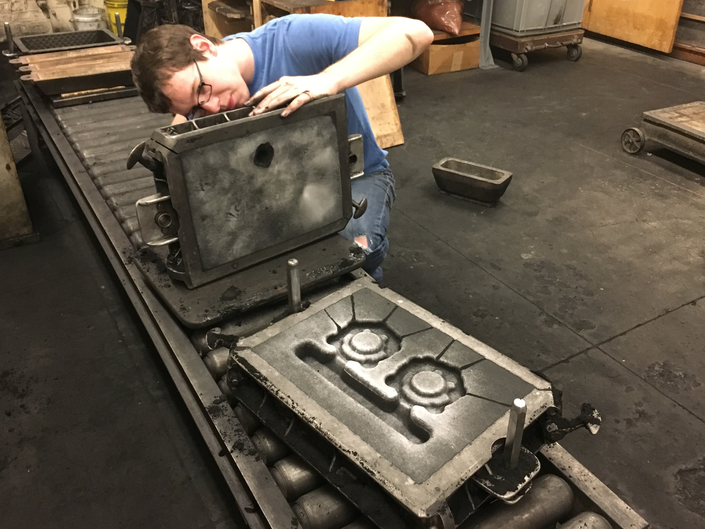
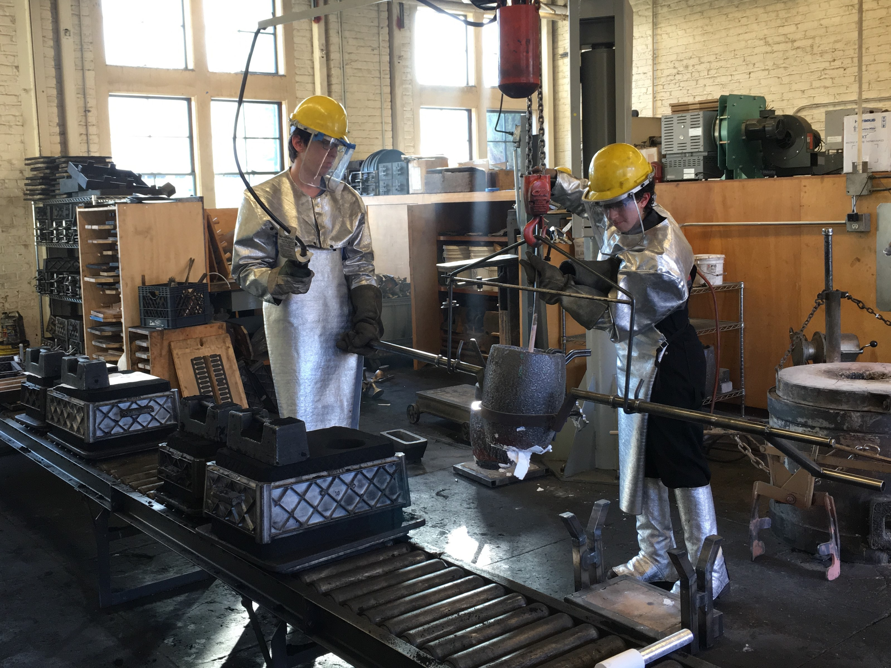
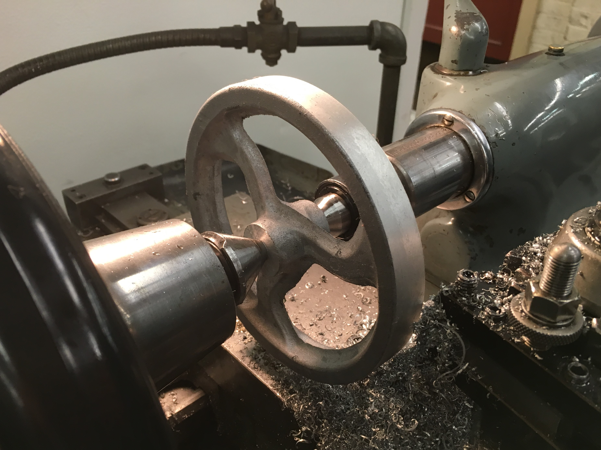
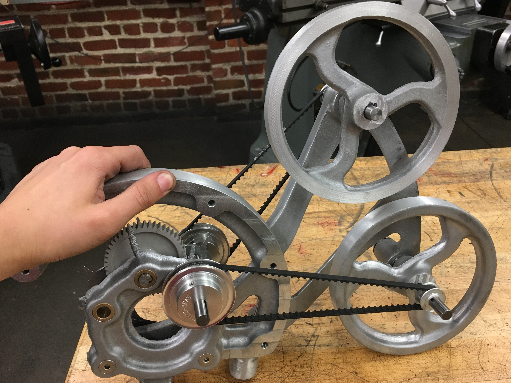
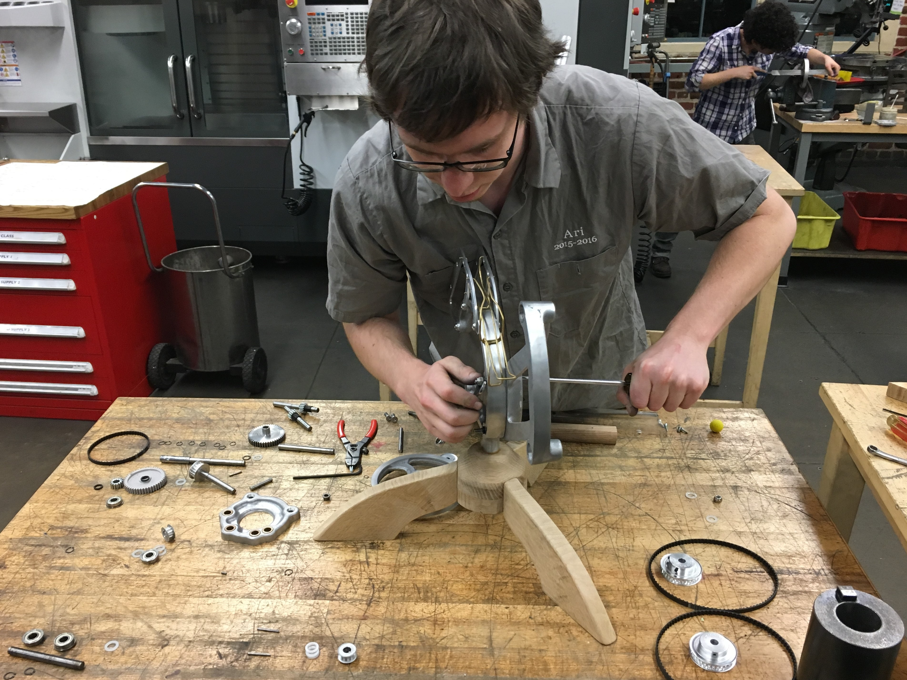
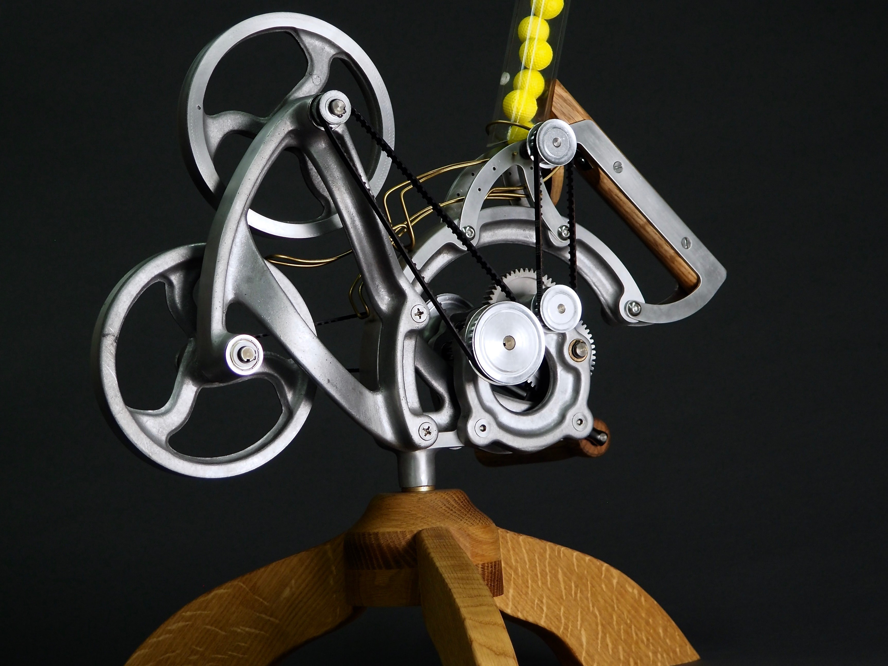

Overshoot
Created for Dave Beach to demonstrate casting fundementals in a fun way
Overshoot was born when Dave Beach approached me looking to create an demonstration of engineering castings that evoked interest and wonder in students that were being newly introduced to the idea for moldmaking, casting and foundrywork. This project was a joint colaboration between me and Tamara Hasoon, and is the result of taking that prompt to heart and trying to make something dynamic and engaging that shot NERF balls at intro design students.

Design
This render of the final cad captures some of the main goals of the project. We wanted to remain as true as we could to casting design principles, and as such the parts have a visible and intuitive even cross sections, clear parting lines and other required features. This was to reinforce the ideas of proper casting fundementals when shown an explicit example of proper practice. The design was also functional first and aesthetic second, to try and emphasize casting as a engineering tool.

Pattern Making
All of the casting patterns were cut from Renshape modeling board on a Shopbot. This allowed us to quickly generate multiple patterns and quickly iterate on patterns we had already cut. Toolpathing was done in Autodesk HSMWorks, and then feeds and speeds were optimized over the course of producing seven patterns. Patterns were cut in two parts each, and then mounted on either side of a pattenboard, with pins to register them correctly with each other. They were then sealed to allow them to cleanly separate from the sand.

Ramming up
Completed patterns were then rammed up in sand in the foundry, with gates and runners attached to them on their pattern boards. We did continual adjustments to the consistency of the foundry sand, geometry of the pouring cup and surface finish of the pattern. All of these changes were in an effort to produce castings with an even surface finish, no sand wash and minimal cavitation. This additional work with these parameters resulted in some of the best surface finishes to come out of the PRL foundry.

Pouring Metal
We poured all of our molds ourselves, Allowing us to troubleshoot issues we had with molding our parts. Some of our larger parts had issues with uneven cooling, and we had to adujst the features in our molds to add risers as resovoirs of molten metal and heat. this mitigated uneven shrinkage which became very important once we moved to postmachining our cast parts. By adjusting the temperature for each of our parts, we were able to ensure even cooling and optimal surface finishes.

Postmachining
All of the constraining machine features had to be postmachined to insure proper functioning after casting. The flywheels were turned on a lathe to balance and clean up the surfaces that engaged the NERF balls. Many of the mechanical fits had small tolerances, including the gear train and the bearing fits for the flywheels. Some of these fits needed additionanl hand work, like lapping in the fit of the bronze bushings in the gear train, and adding a tensioning feature for the belts.

Test Fit
This is the initial test fit of all the mechanical components, to insure free running of all the mechanical components. Overshoot is designed with a 30:1 speed increase from input shaft to output flywheel, so any binding issues later in the gear train can make it very difficult to crank. This test fit also allowed us to test the function of the device, and establish that our prototyped clearance between the launching wheels and chosen RPM worked properly. After thorough testing, we moved to finishing up the firing mechanism, that would automatically feed NERF balls down into the spinning wheels and then launch them accross a classroom.

Final Assembly
With all of the cast parts finished, we moved on to the final non-cast parts that would allow Overshoot to function properly. I sculpted brass rails by hand that let the balls run smoothly down into the flywheels. We also created a feedroller mechanism tied to the input crank that slowly and consistently allowed Overshoot to launch projectiles. Lastly, we added white oak to all all of the touch points to make it feel better to use, and to add a natural contrast to the aesthetic of the engineering cast aluminum.

Result
After a healthy amount of hand filing and sanding, all of the cast parts were assembled and fitted, with their wood and mechainical components. Overshoot has now been used numerous times to explain casting design, and is a staple in ME203 at Stanford, dropping NERF balls on students in the middle of class to make sure they are paying attention. Thank you to Dave Beach, who gave us the budget and the idea to succeed and the constructive feedback to make a compelling device truly happen, and my fearless project partner Tamara who I don't think has ever met a problem she couldn't fix.